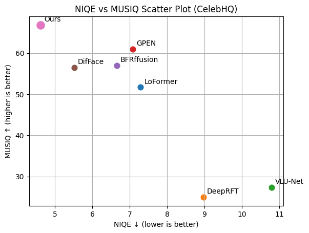
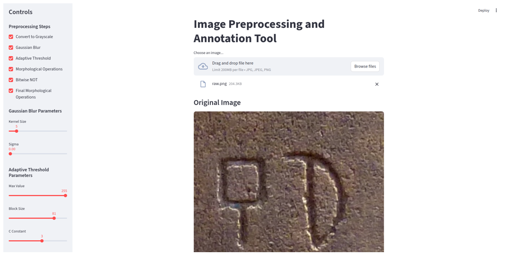
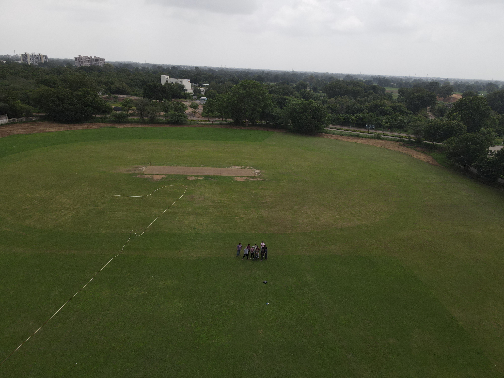
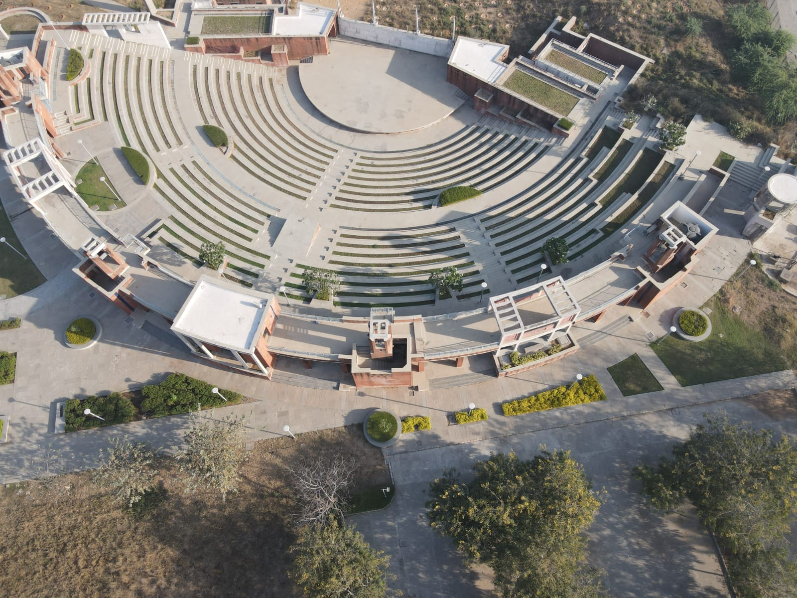

I am a Ph.D. researcher in Computer Science and Engineering at
IIT Gandhinagar, working under the guidance of
Prof. Shanmuganathan Raman.
My research focuses on computer vision, generative models, image restoration, and hyperspectral imaging,
with particular interest in generative priors, latent-space optimization, Gaussian splatting, image restoration,
and hyperspectral image denoising and super-resolution.
Before joining IIT Gandhinagar, I worked as a Project Associate at
IIT Ropar, where I worked on computer vision and
interdisciplinary sensing problems. I completed my M.Tech. in Computer Science and Engineering from
Aliah University, Kolkata, graduating second overall,
and my B.Tech. from the same university, graduating first overall. I also hold a UAV Pilot Licence
for platforms up to 25 kg.
During my Ph.D., I have worked on a range of computer vision and computational imaging problems,
with a focus on developing robust methods for real-world image restoration and understanding. My research explores generative models,
latent-space optimization, Gaussian splatting, and hyperspectral image processing, with applications in image denoising, deblurring,
inpainting, spectral reconstruction, and super-resolution. I also spent six months at
the Helmholtz-Zentrum Dresden-Rossendorf: HZDR through the Research
Lab Abroad Fellowship, where I further worked on computer vision and imaging problems involving real-world data.
🏅Fellowships during PhD: Supported by the
Visvesvaraya PhD Scheme for Electronics & IT (MeitY, Govt. of India),
supporting full-time PhD research in emerging technology areas.
I was also awarded the Research Lab Abroad Fellowship, which supported
a six-month research stay at Helmholtz-Zentrum Dresden-Rossendorf (HZDR), Germany,
for research in computer vision and hyperspectral image restoration.
Research conducted through the Research Lab Abroad Fellowship under the Visvesvaraya PhD Scheme.
Worked on hyperspectral image restoration using generative models, connecting computer-vision
techniques with scientific imaging problems in an interdisciplinary research environment.
Worked on computer-vision methods for industrial automation, combining hyperspectral imaging
with stereo vision for volume estimation. This work provided experience in multimodal sensing,
image analysis and applied computer-vision systems.
Worked as a Computer Science subject matter expert alongside my undergraduate and postgraduate studies,
providing detailed solutions to computer-science questions and developing strong problem-solving
and technical communication skills.
Education
Academic Snapshot
9.14
Ph.D. CPI / 10
9.03
M.Tech CPI / 10
8.97
B.Tech CPI / 10
6 mo.
Research stay in Germany
Research progression. My training has moved from computer science and predictive modelling,
through hyperspectral sensing and field data acquisition, toward generative representations for image restoration and scientific imaging.
Ph.D., Computer Science and Engineering — CPI 9.14 / 10
My doctoral research focuses on visual learning and generative representations for image restoration and hyperspectral imaging. The work spans image restoration, hyperspectral reconstruction, super-resolution and emerging representations such as neural fields and Gaussian splatting, with an emphasis on building practical and physically meaningful reconstruction methods.
Completed an M.Tech. thesis on a predictive framework for Parkinson's disease analysis. The work developed my experience in machine learning, predictive modelling and research-oriented experimentation, and was subsequently published by Springer Nature in 2023.
Completed a B.Tech. project on an IoT-based home automation system, combining sensor integration with wireless communication. The project gave me an early foundation in programming, system integration and building end-to-end technology prototypes.
Publications
7
listed publications
2
IEEE ICIP papers
1
journal publication
4
2026 submissions / reviews
Selected work spanning generative restoration, aerial imaging, scientific data and applied machine learning.
A degradation-agnostic face restoration method that optimises in the latent space of a pretrained generator, handling denoising, deblurring and inpainting without retraining per degradation.

Unsupervised Image Deblurring in Latent Space using Pivotal Tuning Inversion
Akbar Ali, Indra Deep Mastan, Shanmuganathan Raman.
Under review — 2026
Pivotal tuning inversion anchors a blurred observation to a generator's latent manifold, recovering sharp detail without paired supervision or a known blur kernel.
Abhiyodaya Pandey, Akbar Ali, Indra Deep Mastan, Shanmuganathan Raman.
Under review — 2026
Denoising a single image with no training and no clean reference, using CLIP as a semantic critic to steer restoration towards a perceptually faithful result.

InscriptionOCR: A Dataset and Method for Understanding Inscriptions
Jaidev Sanjay Khalane, Akbar Ali, V. N. Prabhakar, Shanmuganathan Raman.
Under review — 2026
A dataset and recognition pipeline for historical stone inscriptions, where weathering and archaic glyph forms break standard scene-text OCR.
A stress test of unsupervised StyleGAN restoration under degradations it was never tuned for, showing where latent-space optimisation holds up and where it silently fails.
An aerial and ground image dataset covering a full cotton growth cycle from weekly drone missions at 10 m, 15 m and 115 m, for crop health and pest analysis.
A predictive framework for Parkinson's disease analysis pairing classification accuracy with descriptive feature analysis so clinicians can see which measurements drive each prediction.
Teaching and Mentoring
My teaching combines fundamentals with hands-on computation and field experience. I particularly enjoy helping students turn an abstract method into something they can implement, visualize and test.
Teaching Focus
Computing Fundamentals
Data structures, algorithms, Python, SQL and practical data handling.
Data & Machine Learning
Probability, statistics, visualization and introductory machine-learning workflows.
Scientific Computing
Working with image data, experiments, evaluation and reproducible computational workflows.
UAV & Field Methods
Mission planning, pre-flight procedures, field acquisition and responsible data collection.
Teaching Experience
Lead Teaching Assistant — ES 113, Data Centric Computing
The course introduces students to the practical foundations of working with data. Topics included data structures and algorithms, Python programming with Pandas and Matplotlib, SQL, data manipulation and introductory machine-learning workflows. As lead TA, I coordinated a 45-student TA team, helped establish the QA-session format and maintained consistent grading standards.
This course focuses on developing clear and effective academic and technical writing. I guided 35 students through classwork and assessments, helped them improve the structure and communication of their writing, tracked progress and conducted individual reviews with students who needed additional support.
Teaching Assistant — SC 333, Drone Data Acquisition and Processing
This hands-on course introduces students to drone-based data acquisition and the processing of imagery collected in the field. I ran flight-training and field sessions for around 30 students, covering pre-flight checks, mission preparation, responsible airspace practices, acquisition procedures and field safety.


Teaching Assistant — ES 114, Probability, Statistics and Data Visualization
This course develops the statistical foundations needed for analysing and communicating data. I ran laboratories and tutorials for 50+ students across three semesters, using Python to demonstrate probability, descriptive and inferential statistics, data analysis and effective data visualization.
Supervise B.Tech and M.Tech students on hyperspectral imaging, image editing and GAN inversion. Two collaborations became co-authored submissions.
Media Coverage 📰
Selected media coverage of my research and academic activities.
2026
GenR: AI-based Face Restoration
IIT Gandhinagar featured GenR, our AI framework for blind face
restoration using StyleGAN3. The coverage highlights our three-stage restoration
approach and its applications to denoising, super-resolution, inpainting and
compression artefact removal.
LinkedIn ↗IITGN News ↗Instagram ↗
2024
IITGN R&D Horizon 62: Smart Farming
IIT Gandhinagar featured our interdisciplinary smart farming project using
drone imagery, AI models and computer vision for crop monitoring, stress
detection, crop density analysis and yield prediction.
LinkedIn ↗Instagram ↗
Collaborations and Field Work
From generative image restoration to hyperspectral sensing, my projects combine representation learning with real-world data and interdisciplinary collaboration.
Current Research Directions
HyperPhys-LRGS
Physics-aware low-rank hyperspectral Gaussian splatting for spectral reconstruction and super-resolution. The direction combines compact spectral bases with differentiable Gaussian representations.
HSIGaussian SplattingLow Rank
Hyperspectral Gaussian Splatting
Exploring Gaussian representations for hyperspectral denoising and reconstruction, including spectral bases and residual restoration strategies.
DenoisingSpectral Basis
Implicit HSI Super-Resolution
Adapting implicit neural representations to continuous hyperspectral reconstruction so that spatial queries can recover spectrally consistent high-resolution signals.
LIIFNeural Field
Generative Restoration
Developing latent-space and training-free approaches for difficult real-world image degradations, with emphasis on robustness and faithful reconstruction.
StyleGANDiffusion
Collaborations & Field Work
3D Geophysical Image Translation using GANs
Feb 2024 — Jan 2025
A year-long collaboration with geoscientists, translating 3D geophysical scans into photorealistic virtual outcrop geology.
What this involved
Interdisciplinary problem formulation, generative modelling and communication between geological interpretation and computer-vision representations.
Smart Farming of Cotton using Aerial Imagery — COT-AD
Jun 2023 — Jan 2024
Designed and ran a six-month acquisition campaign with agricultural researchers, flying weekly missions at 10 m, 15 m and 115 m. I owned the flight schedule, the multi-altitude protocol, and the dataset that became COT-AD.
Why the dataset matters
The repeated multi-altitude observations follow the same field across a full cotton growth cycle, connecting acquisition strategy with downstream visual analysis.
Weekly flights tracking one field through a full growth cycle.
Drone and Core Data Acquisition — Earth Science, IIT Gandhinagar
2023 — 2024
Planned and led three multi-day campaigns for aerial and core sample collection. Site names withheld for confidentiality.
3D Vision Summer School — IIIT Bangalore
Jun 2024
Week-long school on deep learning for 3D vision. The Gaussian splatting sessions shaped the direction my hyperspectral work took afterwards.
Visvesvaraya PhD Scheme Workshop — IIT Mandi
May 2024
Presented my work to an interdisciplinary audience of scholars from across engineering disciplines.
Awards and Certifications
Selected academic distinctions, fellowships and professional certifications.
Research Lab Abroad Fellowship. Awarded the Visvesvaraya PhD Scheme Research Lab Abroad Fellowship in 2025, supporting a six-month research stay at Helmholtz Institute Freiberg, Germany, in 2026.
2025
Research Lab Abroad Fellowship
Visvesvaraya PhD Scheme, MeitY. Six-month research stay at Helmholtz Institute Freiberg, Germany.
2023
UAV Pilot Licence
Certified for platforms up to 25 kg. DJI Mavic and Bajrang platforms.
2022
UGC-NET
Computer Applications.
2021
2nd Rank — M.Tech
Aliah University, Kolkata. CPI 9.03/10.
2019
1st Rank — B.Tech
Aliah University, Kolkata. CPI 8.97/10. Also 1st rank in AUAT M.Tech entrance.
2015–21
National Scholarship
Five times — three during B.Tech, two during M.Tech.
2015
64th Rank — AUAT
B.Tech entrance. Also qualified BCECE, WBJEE and AIEEE.